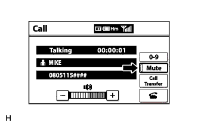

NAVIGATION SYSTEM (for DVD) > The Other Caller cannot Hear Your Voice, or Your Voice is too Quiet or Distorted |
| 1.CHECK CELLULAR PHONE |
Check if the other caller can hear your voice properly.
|
| ||||
| OK | |
| 2.CHECK SETTINGS |
|  |
Check if the mute switch is set to on.
|
| ||||
| OK | |
| 3.CHECK MICROPHONE (NAVIGATION CHECK MODE) |
 |
Enter "Microphone & Voice Recognition Check" (Check Mic & Voice Recognition) (Click here).
When voice is input into the microphone, check that the microphone input level meter changes according to the input voice.
Push the recording switch and perform voice recording.
Check that the recording indicator remains on while recording and that the recorded voice is played normally without noise or distortion.
| *a | Microphone Input Level Meter |
| *b | Recording Switch |
| *c | Stop Switch |
| *d | Play Switch |
| *e | Recording Indicator |
|
| ||||
| OK | ||
| ||